Poli-Art · Grisignano di Zocco (VI)
Lavorazione del polistirolo dal 1986
Oggetti fuori scala per fiere e vetrine, cornici e casseri per l'edilizia, scenografie, lettere in volume, prototipi e torte finte: a controllo numerico e, dove serve, a mano.
File 3D, disegno o foto con le misure. Se manca il 3D, provvediamo noi all'elaborazione del solido virtuale. Formati e misura massima del blocco: chiedeteli al telefono.
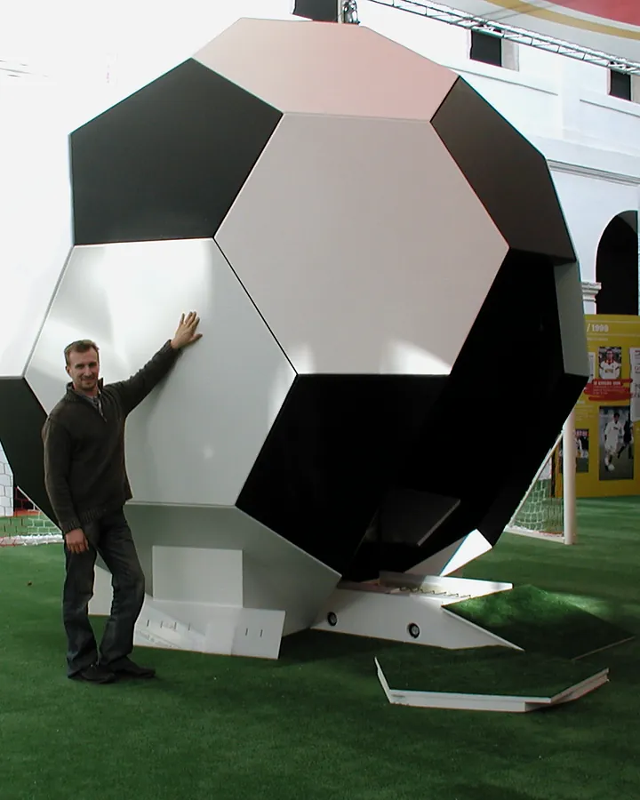
Cosa facciamo
Fiere, cantieri, scenografie, pasticceria
Lavoriamo il polistirene espanso, impiegato in vari settori quali scenografie, edilizia, pasticceria, loghi e fiere. Diteci cosa vi serve e in che misura.
-
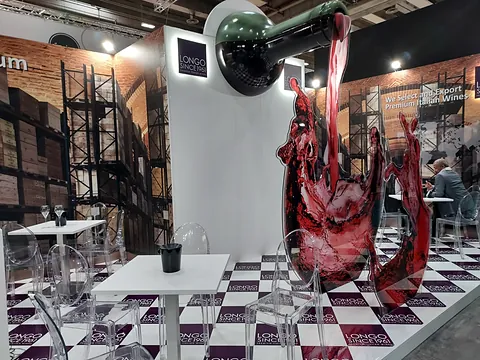
Fiere e vetrine
Oggetti fuori scala per stand e vetrine: un prodotto riproposto in dimensioni più grandi suscita la curiosità del passante.
Vedi i lavori per fiere e vetrine (galleria sul sito attuale, in una nuova scheda) -
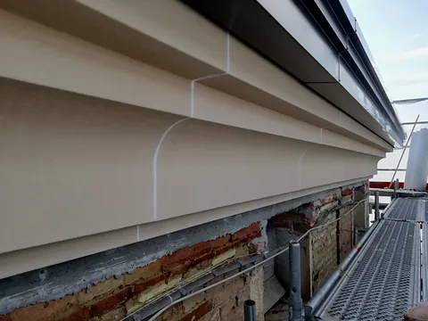
Edilizia e casseri
Cornicioni sottotetto, cornici di finestra, marcapiani, colonne, archi dei porticati e casseforme per il getto del calcestruzzo, opportunamente resinati.
Vedi i lavori per l'edilizia (galleria sul sito attuale, in una nuova scheda) -
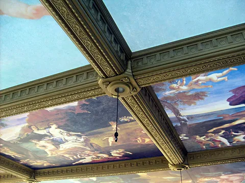
Scenografie
Per il teatro, il cinema e gli eventi: facile da installare e rimuovere, ideale per le produzioni itineranti.
Vedi le scenografie (galleria sul sito attuale, in una nuova scheda) -
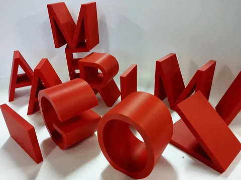
Lettere e loghi in volume
Loghi aziendali e pubblicitari e scritte in volume. Tutto parte col fissare dei paletti che strutturiamo assieme a Voi.
Vedi lettere e loghi (galleria sul sito attuale, in una nuova scheda) -
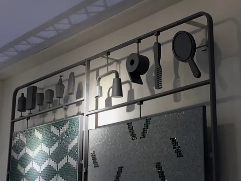
Prototipi e mockup
Per poter vedere e tastare con mano quello che realmente sarà la produzione.
Vedi prototipi e mockup (galleria sul sito attuale, in una nuova scheda) -
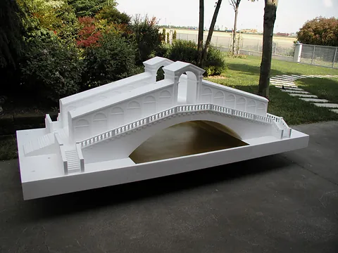
Torte finte e stampa 3D
Basi e torte monumentali per i pasticceri, scritte in volume per le feste. In 3D stampiamo plastiche ecosostenibili, ABS e plastiche strutturali.
Vedi le torte finte (galleria sul sito attuale, in una nuova scheda)
Edilizia e casseri, dai cantieri
Cornici, cornicioni e casseri resinati
Opportunamente resinato, il polistirolo viene impiegato per la realizzazione di tutti quegli elementi architettonici plastico decorativi, e per le casseforme per il getto del calcestruzzo.
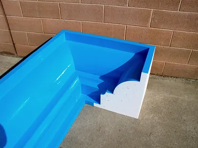
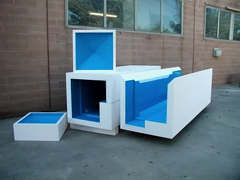
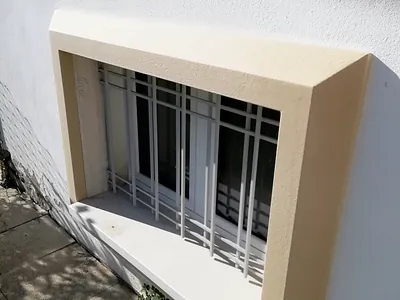
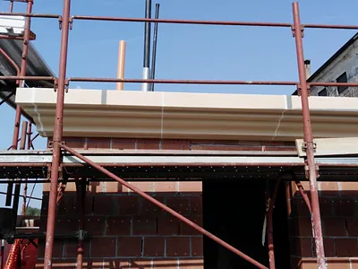
Come mandarci il progetto
Tutto inizia con un progetto
Mandatelo a info@poli-art.it, con le misure e la data in cui vi serve il pezzo. Per tempi e fattibilità, telefonate.
- 01
Il file 3D
Il progetto 3D fornito dal Cliente.
- 02
Un disegno o una foto con le misure
Uno schizzo del profilo, la foto della facciata o del prodotto da ingrandire.
- 03
Lo disegniamo noi
Se il cliente ne è sprovvisto, provvediamo noi all'elaborazione del solido virtuale.
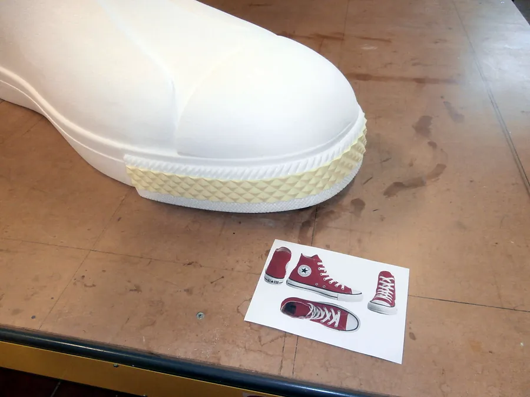
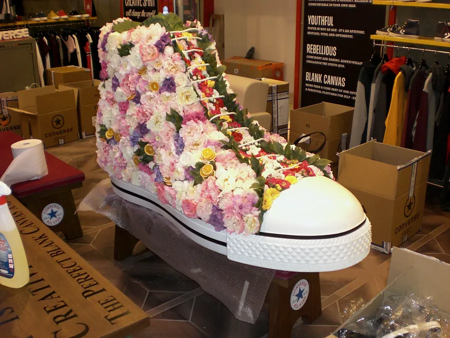
Il laboratorio
Controllo numerico, poi la mano
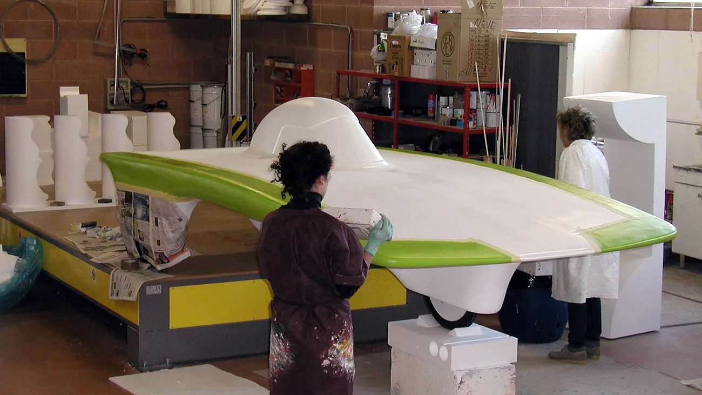
La lavorazione avviene tramite l'utilizzo di macchine a controllo numerico ed, ove necessario, con l'insostituibile lavorazione artistico manuale.
Poi i trattamenti plastici e le resinature del pezzo, per una durata ed una presenza più duratura: superfici resistenti agli urti, a prova di "curiosi".
- MaterialePolistirene espanso ad alta densità
- LavorazioneControllo numerico e lavorazione artistico manuale
- FinituraTrattamenti plastici e resinature
- Stampa 3DPlastiche ecosostenibili, ABS e plastiche strutturali
1986L'anno in cui nasce l'azienda.
Essendo un mercato di nicchia l'esperienza ed il know-how maturato negli anni imperano per la riuscita di un buon prodotto.
Poli-Art, Chi siamo
Dove siamo
Scriveteci o chiamateci
- info@poli-art.it
- Laboratorio
- Via Tesinella 7, 36040 Grisignano di Zocco (VI) Apri la mappa Indicazioni stradali Per passare in laboratorio o chiedere del ritiro di un pezzo, telefonate prima.
- Cosa mandarci
- il file 3D, se c'è, o un disegno o una foto con le misure;
- quanti pezzi e in che finitura;
- la data in cui vi serve il pezzo.
- Altri lavori
- Instagram @poliartgrisignano